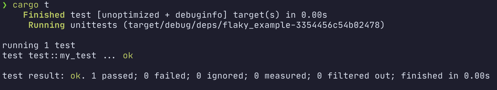

Marin Postma
Meilisearch
MarinPostmaFlaky tests
How to deal with non-deterministic test failure in Rust
Flaky you say? 🤔
Sometimes it works...
Sometimes it fails...
... Always painful
What causes flakiness?
- Something's wrong with the test code
- Something's wrong with the product code
Buggy tests
Always check your tests first!
look for tests that rely on:
- time
- ordering
- values being within some range
- some external environment
- global state
Buggy product
fn square_then_add_two(mut input: usize) -> usize {
let (tx, rx) = mpsc::channel();
let tx_clone = tx.clone();
spawn(move || { tx.send(Ops::Square).unwrap(); });
spawn(move || {
sleep(Duration::from_nanos(1));
tx_clone.send(Ops::AddTwo).unwrap();
});
while let Ok(op) = rx.recv() {
input = match op {
Ops::Square => input * input,
Ops::AddTwo => input + 2,
}
}
input
}
#[test]
fn my_test() {
assert_eq!(square_then_add_two(7), 51);
}

Ready for Review!
right?

Say hi to rr! 👋
- created at Mozilla
- "reverse" debugger
- deterministically record the execution of a program
- debug in GNU debugger (gdb)
- check it out at https://rr-project.org/
Let's fix it! 💪

fn square_then_add_two(input: usize) -> usize {
input * input + 2
}

cargo install cargo-flaky
github: meilisearch/cargo-flaky
Caveats:
- Only works on x86-64 Linux
- Relies on good debug symbols generation
Takeaways
- Continually check for flakiness
- Always check the tests first
- Fallback to git bisect + cargo flaky
- Do not ignore flaky tests